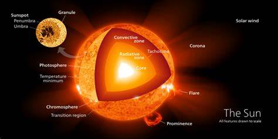

Definisi Terbentuknya Tata Surya Menurut Ahli
1. Teori Planetesimal oleh Ahli Geologi Thomas C. Chamberlin (1843-1928) dan Astronom Forest R. Moulton (1872-1952)
.jpeg)
Menurut hasil penelitian para ahli ini tata surya terbentuk karena adanya benda langit lain yang lewat cukup dekat dengan matahari pada saat awal pembentukan matahari. Akibat dari kedekatan benda langit tersebut dengan matahari mengakibatkan adanya tonjolan pada permukaan matahari.
Dengan adanya bantuan bintang yang dekat dengan matahari akan memberikan efek gravitasi sehingga terbentuknya dua lengan spiral yang memanjang pada matahari. Setelah itu sebagian besar materi akan tertarik kembali, dan sebagian benda langit lainnya akan tetap di orbit akan mendingin dan memadat dan akan menjadi benda-benda berukuran kecil yang disebut dengan planetisimal.
Beberapa benda planet lainnya yang berukuran besar disebut dengan proto planet. Dan objek-objek tersebut akan bertabrakan dari waktu ke waktu dan akan membentuk bulan dan planet dan sisa dari materi lainnya menjadi komet dan asteroid.
2. Teori Awan Debu oleh Carl Von Weizsaeker (1940) dan Gerard P Kuiper (1950)

Menurut hasil penelitian para ahli ini tata surya terbentuk dari gumpalan gas dan debu kemudian gumpalan awan mengalami penyumbatan dan pada proses penyumbatan tersebut partikel-partikel debu akan tertarik masuk ke bagian pusat awan membentuk gumpalan bola dan kemudian mulai terikat yang akan membentuk cakram yang tebal di bagian tengah dan bagian tepi nya yang tipis.
Lalu partikel-partikel di bagian tengah cakram akan saling menekan dan kemudian menimbulkan panas dan berpijar , dan bagian inilah yang akan menjadi matahari. Sementara itu bagian yang luar akan berputar sangat cepat sehingga akan terpecah-pecah membentuk gumpalan yang lebih kecil dan gumpalan kecil ini akan terikat dan kemudian membeku yang akan menjadi planet-planet.
3. Teori Nebula (Teori Kabut) oleh Immanuel Kant (1749-1827) dan Piere Simon de Laplace (1796)
.jpeg)
Menurut hasil penelitian para ahli ini tata surya melalui proses yaitu matahari dan planet berasal dari kabut yang berpijar yang terikat di dalam jagat raya. Karena berupa kabut yang berbentuk bulat seperti bola yang besar dan jika semakin bola itu mengecil akan semakin cepat putarannya.
Lalu akibatnya bentuk bola tersebut mendekat pada kutubnya lalu melebar di bagian equatornya sehingga bagian massa dari kabut gas menjauh dari gumpalan intinya dan akan membentuk gelang-gelang pada sekeliling bagian utama kabut kemudian gelang-gelang tersebut akan membentuk gumpalan yang akan menjadi planet-planet dan satelit. Sedangkan bagian tengah yang masih berpijar akan selalu membentuk gas pijar yang disebut dengan matahari.
Sistem Tata Surya

Gambar dari susunan Tata Surya
Matahari

Matahari merupakan anggota penting dalam tata surya yang merupakan komponen utama dalam tata surya. Matahari juga disebut sebagai induk di dalam tata surya . Matahari memiliki ukuran sebesar 332.830 massa bumi.
Dengan memiliki ukuran massa yang besar ini menimbulkan kepadatan inti yang besar agar bisa mendukung kesinambungan fusi nuklir dan menimbulkan sejumlah energi yang dahsyat.
Kemudian energi ini dipancarkan ke luar angkasa radiasi elektromagnetik dan termasuk spektrum magnetik. Matahari juga memiliki lapis lapisan-lapisan yaitu :
- Bagian Inti Bagian inti adalah lapisan paling dalam pada matahari yang memiliki suhu 14 juta kelvin, dan inti core ini merupakan tempat terjadinya reaksi nuklir yang akan menghasilkan energi yang sangat besar.
- Fotosfer adalah lapisan yang masih memiliki energi panas yang dahsyat yang suhunya sekitar 6000 kelvin yang memiliki ketebalan sekitar 300 km. Dan fotosfer merupakan bagian matahari yang dapat dilihat, namun kita tidak bisa selalu menatap matahari secara langsung karena dapat menimbulkan kerusakan mata.
- Kromosfer adalah lapisan bagian atmosfer matahari yang memiliki suhu 4.500 kelvin dan memiliki ketebalan 2.000 kilometer.
- Korona adalah lapisan luar matahari yang tidak terlalu memberikan energi panas karena korona memiliki suhu 1 juta kelvin serta memiliki ketebalan 700.000 km. Energi panas yang selalu dipancarkan matahari memungkinkan adanya kehidupan di bumi. Dan tanpa pemantulan cahaya matahari. Jadi kita tidak bisa melihat anggota-anggota lain dari tata surya hanya yang tampak saja seperti bintang, meteor dan komet.
2. Planet -Planet
Selain matahari ada juga anggota benda-benda langit lainnya yaitu planet-planet. Planet adalah anggota benda-benda langit yang memiliki beberapa variasi dengan bentuk dan ukuran tertentu pada planet. Planet terbagi menjadi 7 yaitu merkurius, venus, bumi, mars, jupiter, saturnus, uranus, neptunus yang memiliki variasi dengan bentuk ukuran tertentu pada setiap planet.
Planet dalam adalah planet yang orbitnya dekat dengan Matahari, yaitu:
- Merkurius,
- Venus,
- Bumi, dan
- Mars.
Sedangkan, planet luar adalah planet yang orbitnya jauh dari matahari, yaitu:
- Jupiter,
- Saturnus,
- Uranus, dan
- Neptunus.
Merkurius
.jpeg)
Planet Merkurius merupakan planet yang terdekat dengan matahari yang memiliki jarak sekitar 58 juta kilometer dari matahari. Planet merkurius ini tidak dapat dilihat hanya dengan kasat mata. Merkurius biasa bisa di lihat ketika disaat waktu fajar dan waktu senja. Merkurius adalah planet yang terkecil diantara planet yang lainnya.
Merkurius hanya memiliki 4.862 km, pada permukaan merkurius memberikan energi yang panas dan kering. Merkurius akan bergerak mengelilingi matahari 1 kali putaran membutuhkan waktu 88 hari dan akan berotasi dengan periode rotasi 59 hari karena merkurius tidak memiliki satelit. Merkurius melakukan gravitasi pada permukaan bumi sekitar sepertiga gravitasi.
Venus
.jpeg)
Planet selanjutnya adalah Venus. Kamu pernah dengar ‘bintang kejora’? Itu merupakan salah satu julukan dari planet Venus. Planet ini biasa terlihat dari Bumi pada sore hari lho, guys. Terlihat seperti bintang, tapi tidak kerlap-kerlip.
Namun, atmosfer planet Venus ini beracun, diisi dengan karbon dioksida dan diselimuti awan tebal berwarna kuning yang mengandung asam sulfat. Awan tersebut membuat panas terperangkap di dalamnya, hal inilah yang menyebabkan efek rumah kaca berlebih. Itulah mengapa meskipun Merkurius merupakan planet terdekat dengan Matahari, namun Venus yang memiliki suhu paling panas di antara planet lainnya.
Planet yang berwarna putih kekuningan; Memiliki atmosfer yang tebal dan sebagian besar terdiri dari asam sulfat dan karbon dioksida. Satu hari di Venus sama dengan 243 hari di Bumi. Hal ini karena rotasi Venus yang berputar terbalik dari planet lainnya. Sehingga, Matahari terbit di Venus bukan di timur, melainkan dari arah barat. Sedangkan terbenam di arah timur.
Bumi
.jpeg)
Bumi adalah salah satu planet yang tidak memiliki ukuran terbesar, karena yang kita tempati adalah bumi sehingga kita menganggap bumi adalah planet terbesar de ngan adanya jumlah penduduk yang tak terhitung.
Pada bumi ini ada atmosfer yang melindungi dan campuran bahan kimia organik yang tepat untuk melindungi pada lapisan matahari. Sehingga planet ini merupakan satu-satunya planet dalam anggota tata surya yang dapat mendukung adanya kehidupan dan bumi termasuk planet ketiga dalam urutan sistem tata surya.
Bumi adalah planet yang paling dinamis yang dapat mendaur ulang diri nya sendiri dengan suhu dan tekanan permukaan bumi memungkinkan adanya air dan bisa dijadikan dalam bentuk cair, padat atau gas. Bumi memiliki diameter sekitar 12.700 km dan akan berevolusi 365,25 hari serta rotasi nya dalam waktu 24 jam. Dan bumi hanya memiliki satu satelit yaitu bulan.
Mars
.jpeg)
Mars dijuluki sebagai ‘planet merah’, Mars merupakan planet di urutan keempat dalam tata surya. Mars memiliki atmosfer yang sangat tipis, dingin, berdebu, padang pasir atau gurun. Planet Mars juga terkenal dengan gunung berapinya yang besar dan lembah yang dalam. Bahkan planet ini merupakan yang paling sering terjadi badai angin dibandingkan dengan planet lainnya. Ini dia ciri-ciri planet Mars diantaranya dijuluki sebagai ‘planet merah’,
Memiliki permukaan yang berwarna kemerah-merahan, karena berasal dari oksida besi, Komposisi atmosfernya diantaranya karbon dioksida, nitrogen, argon, oksigen, dan uap air. Jarak antara planet Mars dengan Matahari sekitar 228 juta km (142 juta mil). Planet Mars memiliki dua satelit, yaitu Phobos dan Deimos. Mars tidak memiliki cincin. Suhu planet Mars antara -113 sampai 0°C.
Jupiter
.jpeg)
Jupiter adalah planet kelima dalam urutan anggota tata surya . Jupiter merupakan planet yang terbesar diantara planet yang lainnya. Jupiter memiliki garis tengah pada permukaannya sekitar 142.860 km dan mempunyai volume sekitar 1.300 kali dari volume bumi.
Dengan letak jupiter lebih jauh dari planet yang lainnya, namun jupiter mudah dilihat dengan kasat mata karena ukurannya yang sangat besar dan memantulkan lebih dari 70% cahaya matahari yang diterimanya. Jupiter memiliki gas yang berwarna merah yang akan berputar mengelilingi tengah-tengah planet jupiter yang akan membentuk ikat pinggang merah raksasa yang kemudian menghasilkan badai besar di permukaan jupiter.
Untuk rotasi nya jupiter melewati masa rotasi selama 9,8 jam yang sekitar 2,5 kali lebih cepat dibandingkan dengan bumi serta dengan revolusi nya sekitar 12 tahun.
Saturnus
.jpeg)
Saturnus adalah planet yang ke enam dalam urutan anggota tata surya. Saturnus merupakan planet yang tercantik diantara planet lainnya karena saturnus memiliki cincin yang mengelilingi planet karena ukuran cincinnya lebih besar dibandingkan dengan planet yang lainnya.
Saturnus adalah planet yang ke enam dalam urutan anggota tata surya. Saturnus merupakan planet yang tercantik diantara planet lainnya karena saturnus memiliki cincin yang mengelilingi planet karena ukuran cincinnya lebih besar dibandingkan dengan planet yang lainnya.
Uranus
.jpeg)
Uranus adalah planet yang ke tujuh dalam urutan anggota tata surya. Pada planet uranus ini sangat berbeda dengan planet lainnya karena salah satu kutub dari planet uranus ini menghadap ke matahari dan berotasi pada sumbu yang sebidang dengan bidang edarnya yang mengelilingi matahari.
Uranus adalah planet yang ke tujuh dalam urutan anggota tata surya. Pada planet uranus ini sangat berbeda dengan planet lainnya karena salah satu kutub dari planet uranus ini menghadap ke matahari dan berotasi pada sumbu yang sebidang dengan bidang edarnya yang mengelilingi matahari.
Memiliki satelit sebanyak 27 buah. Diameter planetnya sebesar 50.724 km. Berwarna biru muda. Memiliki cincin redup vertikal. Berputar pada poros sejajar orbitnya. Atmosfernya terdiri dari metana, inti padat metana beku. Jarak Uranus ke Matahari sejauh 1,8 miliar mil (2,9 miliar km. Uranus membutuhkan 17 jam Bumi untuk berotasi pada porosnya, dan membutuhkan 84 tahun Bumi untuk mengorbit Matahari.
Neptunus
.jpeg)
Neptunus adalah planet yang ke delapan dalam urutan anggota tata surya. Neptunus adalah planet yang memiliki angin yang badai sehingga disebut dengan planet yang paling berangin dalam tata surya. Sehingga bisa saja ada badai yang sangat besar yang timbulnya dari planet ini. Planet ini memiliki ukuran jarak dari matahari yaitu sebesar 4-500 jt km.
Untuk massa 16 jam. revolusi pada planet ini membutuhkan waktu selama 165 tahun serta yang dibutuhkan untuk rotasinya adalah 16 jam . Planet neptunus ini memiliki kesamaan dengan uranus memiliki atmosfer yang terdiri dari helium dan hidrogen serta memiliki gas metana yang sama dengan planet neptunus. Pada planet neptunus ini juga berbeda dengan lainnya, planet ini tidak memiliki batasan-batasan antara lapisan-lapisannya.